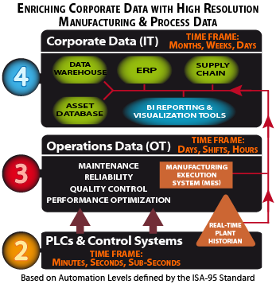

A major barrier to converging data typically managed by IT and data from process and manufacturing sources, is that IT departments are sometimes not as experienced with Operational Technology (and real-time data) as they are with traditional
office-level IT. What happens on the production side is traditionally not part of their domain.
IT staffers may administer IP addresses, upgrade server software and maintain firewalls, but key production systems such as SCADA, HMI, plant historians, environmental monitors, equipment interfaces and other critical plant infrastructure remain
under operations management.
DST has deep experience on both sides of this divide, and we can assist in bridging the knowledge (and cultural) gaps on many levels...
- Serving as Trusted Advisors to CIOs and their staff
- Conducting training programs around specific projects
- Gathering requirements from internal and external stakeholders
- Preparing RFPs for vendors and contractors
- Providing temporary project-implementation staff
DST is focused on business outcomes, not technology assets or the departments that own them. We provide detailed and flexible quotations based on actual customer needs and circumstances.